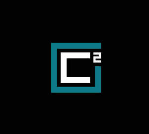

Trade Mark Journal No.2026/012 20 March 2026
UK00004350196 6 March 2026 (37)
Mark 1

Mark 2
Mark 3
- Class 37
- Concreting; Installation of concreting formwork; Construction of hard-standing areas; Hire of concreting equipment; Construction consultancy; Construction of foundations for roads; Beneath ground construction work relating to pipework; Building construction consultancy; Installation of shuttering for concreting; Consultancy services relating to the construction of buildings; Construction of foundations for buildings; Beneath ground construction work relating to foundation laying; Site preparation [construction]; Beneath ground construction work relating to plumbing; Construction of foundations for bridges; Plastering contractor services; Construction of carriageways; Scaffolding construction; Erection of formwork for building and construction; Construction of foundations for dams; Erection of formwork for civil engineering construction; Construction of foundations for civil engineering structures; Consultancy relating to residential and building construction; Hire of construction machinery; Installation of utilities in construction sites; Erection of scaffolding for civil engineering construction; Building construction and demolition services; Beneath ground construction work relating to cabling; Construction of civil engineering structures by laying concrete; Buildings (Damp-proofing of -) during construction; Beneath ground construction work relating to drain laying; Excavation services; Erection of scaffolding for building and construction; Damp-proofing during construction; Earthmoving; Erection of formwork for restoration and maintenance; Paving contractor services; Construction of railway roadbeds; Construction of motorways; Beneath ground construction work relating to sewers; Civil engineering [construction] consultancy; Repointing of brickwork; Construction of stables; Beneath ground construction work relating to wiring; Laying and construction of pipelines; Installation of formwork for concrete; On site project management relating to the construction of aerodrome facilities; Bricklaying; Damp-proofing [building]; Building damp-proofing; Construction of harbours; On site project management relating to the construction of buildings; Construction; Building, construction and demolition; Building and construction services; Building construction services; Hiring of construction equipment; Construction of sewerage systems; Building consultancy; Construction services; Building refurbishment services; Construction of ramparts; Beneath ground construction work relating to gas supply mains; Construction of railways; Hiring of construction machinery; Custom construction of motorways; Building construction supervision services for building projects; Services for the construction of buildings; Winching of buildings and constructions; Excavating; Construction of drainage systems; Beneath ground construction work relating to water supply mains; Onshore construction; Construction of house extensions; Installation services of building scaffolds; Infrastructure construction; Construction of roads; Hire of construction plant; Hydraulic construction services; Building consultancy services; Property development services [construction]; Construction of tunnels; Consultancy and information services relating to construction; Construction of prospecting platforms; Hire of construction apparatus; Services for the redecoration of buildings; Underground construction; Concrete renovation; Leasing of construction equipment; Consultation in building construction supervision; General building construction services; Building construction; Construction supervision of buildings; Supervision of building construction; Rental of tools, plant and equipment for construction, demolition, cleaning and maintenance; Consultancy services relating to the repair of buildings; Construction of piles; Development of land [construction]; On-site construction supervision of civil engineering works; Civil construction services; Scaffolding hire; Hire of scaffolding; Excavation of ruins, other than for archaeology.
C SQUARED CONSTRUCT LIMITED